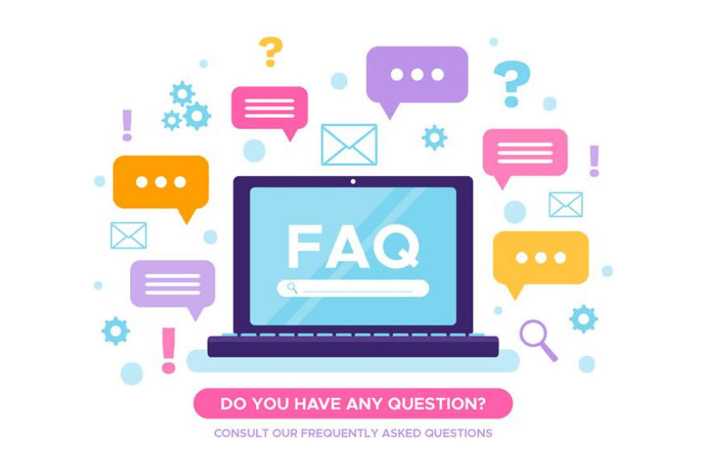

¿Que es el Outsourcing?
Es conocido también como el régimen de subcontratación o prestación de servicios que permite contratar personal desde una empresa externa. Es una figura jurídica y fiscal que permite a un patrón adjuntar los servicios de uno o varios trabajadores “indirectamente”.¿Brindan garantia en los reclutamientos estrategicos?
Si, dependiendo el perfil se proporciona una garantia de 30 a 60 dias¿cuales son mis responsabilidades a subcontratar?
Se piensa que, al recurrir a la Subcontratación de servicios especializados, el jefe se exime de toda responsabilidad con el trabajador. Esto es completamente falso, pues la Suprema Corte de Justicia establece que la subcontratación implica una responsabilidad solidaria del patrón.
Creada el 20 de agosto de 2022